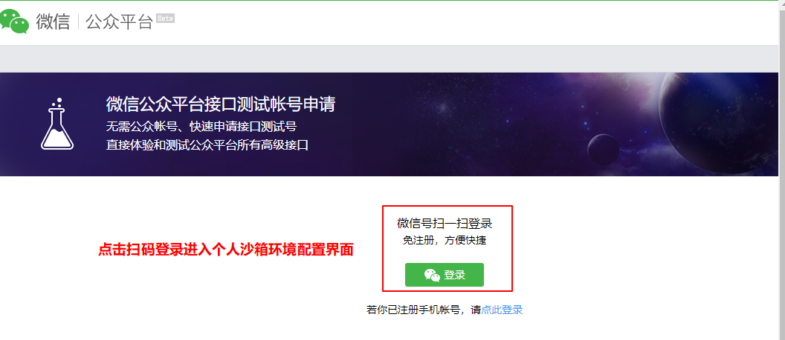
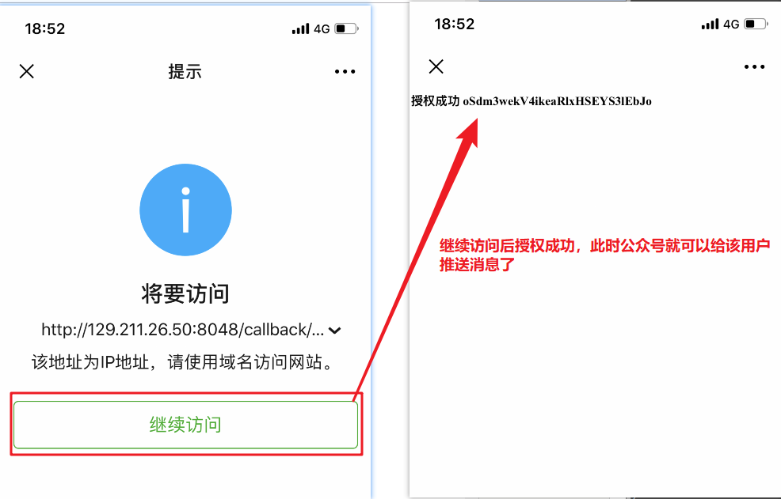

原文出处:本文由博客园博主MrSu提供。
原文连接:https://www.cnblogs.com/suguangti/p/11170632.html
原文连接:https://www.cnblogs.com/suguangti/p/11170632.html
推送的方式：
- 短信推送(第三方)
- 邮件推送
- 微信推送
- 公众号：认证的公众号(个人的认证公众号每天只能发一篇文章)，粉丝可以跟公众号聊天，
- 未认证公众号
- 服务号：企业认证(营业执照)，沙箱环境测试
- 主动给用户发消息(推送)，用户要接收到推送消息前提是需要关注对应的服务号才行
- 企业号
- 微信小程序
- 公众号：认证的公众号(个人的认证公众号每天只能发一篇文章)，粉丝可以跟公众号聊天，
微信推送的流程：
微信沙箱环境：http://mp.weixin.qq.com/debug/cgi-bin/sandbox?t=sandbox/login

使用pycharm打开微信推送demo，然后进行相关修改(下载地址)
settings.py配置文件修改测试参数：
然后将修改好的项目代码文件部署到服务器中，运行起来就可以测试了！
流程分析：
① 用户登录到我的系统，扫码关注我的服务号(测试沙箱环境提供测试号二维码)，关注以后用户还需要进行回调授权允许才算跟我的系统进行绑定
② 让用户跟我的系统绑定：

登录认证装饰器
生成的授权二维码扫码成功后，会自动跳转到回调路由链接

点击继续访问，得到callback回调函数返回的结果并渲染到手机html页面上
给用户推送消息功能
使用场景，公众号发布文章、公众号提供购买服务，用户购买成功后、公众号需要主动与用户联系的时候就需要给关注公众号并已经授权的用户发送信息，即推送消息
路由：

模板形式推送消息
简单给单用户推送信息功能的实现，这里需要再进一步思考一下，如何给多用户或者全部用户推送消息？